前提スライドにはキーワードと短い文しかない。話の中身はここ。台本ではないので、自分の言葉で話す。
前提ページ番号・脚注・出典は画面に出していない。出典は `../tencent-x-santi_talk-structure.md` の第5節。
前提画面の明るさも話の一部：三体の世界（森・夜）は暗い画面、本そのものの話（実物・ドラマ・著者・読んだ人・私）とテンセント（競馬場）は紙の色、最後にまた暗い森に戻る。図の中の墨（赤＝撃つ、青や金のすじ＝競う、緑＝勝ち残る）は絵の一部で、話し方は変わらない。
前提画面の中国語（章扉の筆文字、朱色の判子、s36の縦書き）は飾り。聞かれたら読み方と意味だけ答える：开篇（はじまり）、三体、黑暗森林、赛马（競馬）、语文（国語）、中国、谢谢（ありがとう）。
社長に『三体』を手に取ってもらうために（押しつけない）最初に「おもしろい」と言い切る（s13）。
社長に『三体』を手に取ってもらうために（押しつけない）答えのある謎（宇宙人はなぜ静か？ s14–s16）と、答えを言わない謎（面壁者4人、勝つのは誰？ s20）を両方置く。
社長に『三体』を手に取ってもらうために（押しつけない）ドラマ2本と毒殺事件（s08–s09）、読んだ人7人（s12）は「ちなみに」の雑談として話す。
社長に『三体』を手に取ってもらうために（押しつけない）結びで「おすすめポイント」を3つだけ見せる（s42）。「社長に」「読んでください」とは言わない。
社長に『三体』を手に取ってもらうために（押しつけない）最後は「人類は勝てるのか。答えは第2部に」とだけ言って終える（s43）。当日は実物の本を手に持っておくだけでいい。
質問が出たら重複はムダでは？：小さく、短く走らせれば安い保険。WeChatの最初の版は約10人・約2か月。
質問が出たら社内で競わせると、雰囲気が悪くならない？：同じゴール、期限つき、ユーザーが審判、負けた側を責めない、というルールが前提。
質問が出たら作家や企業の政治的な話：「作品の概念と、テンセントの経営判断だけを扱っています。作家や企業の政治的な評価はしません」。
質問が出たら毒殺事件の詳しいこと：公開されている事実（2020年、版権会社のCEOが親会社の創業者を毒殺、2024年3月に一審で死刑判決、2026年5月に執行）以上は話さない。
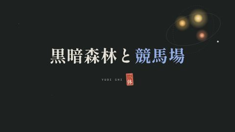
（この枚のノートは無い。画面の字を読むだけ）
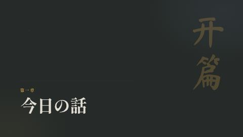
（この枚のノートは無い。画面の字を読むだけ）
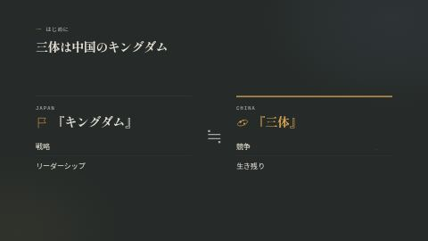
「日本では『キングダム』から戦略やリーダーシップを学ぶ人が多いですよね。中国で同じ読まれ方をしているのが『三体』です。学ぶのは、競争のルールと生き残り方」。
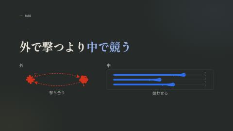
「テンセントは競争をやめなかった。外で撃ち合うより、社内でチーム同士を競わせるほうに力を入れた。今日は『三体』から入って、テンセントの2010年11月を見ていきます」。「外で一切撃たなかった」とは言わない（s39で正直に話す）。
「内巻（ネイジュエン）」と言いたくなるが、内巻は"成果の出ない消耗戦"という悪い意味。テンセントの競馬は"ユーザーが勝ちを決める設計された競争"なので、「競馬であって、内巻ではない」と対比で使うならあり。
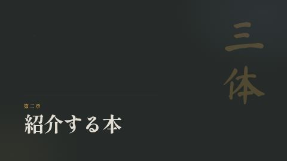
（この枚のノートは無い。画面の字を読むだけ）
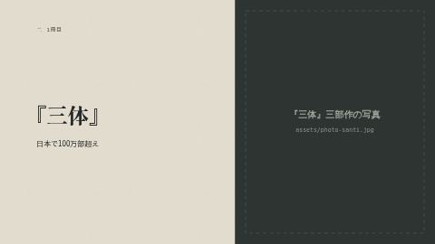
三部作で累計100万部超。第2部の考え方まで話す。第3部の展開には触れない。
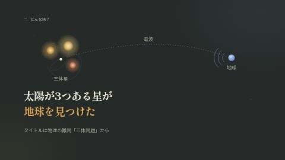
「舞台は、太陽が3つある星です。3つの太陽は動きが読めないので、いつ灼熱になるか、いつ凍りつくかわからない。文明は何度も滅びてきた。その星が、地球を見つけます」。タイトルの「三体」は物理の難問「三体問題」から。3つの星が引っぱり合うと、その動きは一般には解けない（1889年にポアンカレが示し、のちのカオス理論につながった）。ここでは物理の説明は深入りしない。
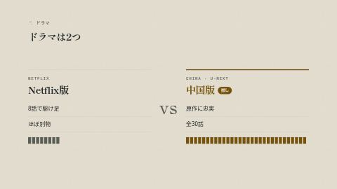
「Netflix版は8話で駆け足。舞台もイギリスに移って、正直ほぼ別物です。私の推しは中国版。原作に忠実で全30話、日本でもU-NEXTで見られます」。中国版はテンセント（今日の主役）の動画サービスで配信された。オバマ元大統領はNetflix版のカメオ出演の依頼を「本物の宇宙人の侵略に備えておく」と断っている（笑いどころ）。
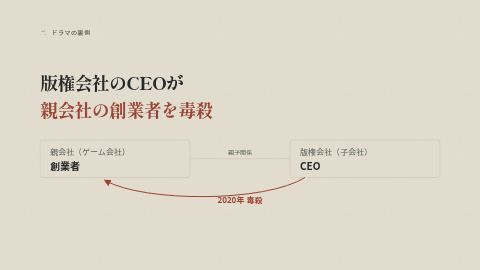
「この2本のドラマの裏で、事件がありました。2020年、三体の版権を管理する会社のCEOが、親会社の創業者を毒殺したんです。一審の死刑判決が出たのは2024年3月22日。Netflix版の配信開始の翌日でした」。事実だけを淡々と。冗談にしない。
背景（聞かれたら）：親会社はゲーム会社の游族網絡（ユーズー）。創業者の林奇（リン・チー）が『三体』の映像化権を買い、子会社「三体宇宙」をつくった。そのCEOの許垚（シュー・ヤオ）が、仕事の不満から林奇の食べ物に毒を入れ、林奇は2020年12月25日に39歳で亡くなった。林奇はNetflix版の製作総指揮にも名前が残っている。
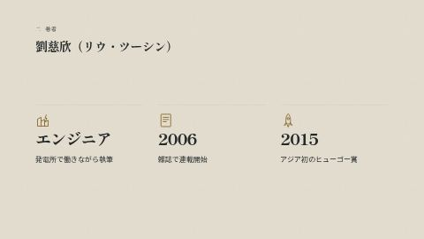
劉慈欣（1963年生まれ）は、山西省の発電所でコンピューターのエンジニアをしながらSFを書いていた。2006年に雑誌で連載開始、2015年にアジア人で初めてヒューゴー賞（SFでいちばん有名な賞）。「宇宙をルールで書いた人です」と言って、次の"森"につなげる。
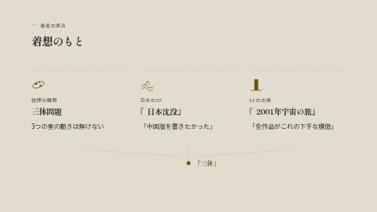
著者の原点を3つ。
三体問題：タイトルの由来（s07で話した）。
『日本沈没』：小松左京、1973年。劉慈欣は「『三体』は『日本沈没』に大きな影響を受けた。中国版の『日本沈没』を書きたかった」と話している（講演者訳）。日本の人にはここが一番の驚き。社長の世代なら映画やドラマも知っているはず。
『2001年宇宙の旅』：アーサー・C・クラーク。劉慈欣は1981年、高校生のときに読んで「私の作品はすべて、これの下手な模倣」とまで言っている（講演者訳）。
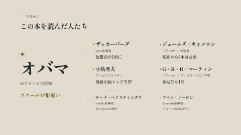
「ちなみに」の雑談。有名な人ほど大きく載せた。オバマ → 右の4人 → 下の2人の順に目線が流れる。全員は読まない。オバマ、キャメロン、小島秀夫の3人だけ話して、あとは「ほかにも、こんな人たちが」で済ませる。
オバマ元大統領：2017年のインタビューで「スケールが桁違い。議会との毎日の問題がちっぽけに思える。宇宙人が攻めてくるんだから」（講演者訳）。
ザッカーバーグ：2015年、自分の読書会の1冊に選んだ。
ジェームズ・キャメロン（『タイタニック』『アバター』の監督）：2019年に劉慈欣と対談し、「ちゃんと映画にするなら6本は必要」と話した。
小島秀夫：日本語版の帯に「奇跡の『超トンデモSF』だ」。日本の人にはここが一番響く。
ジョージ・R・R・マーティン（『ゲーム・オブ・スローンズ』の原作者）：英語版の推薦文で "A breakthrough book"＝「画期的な1冊」。
下の2人：リード・ヘイスティングス（Netflix創業者）"a mind-bending masterful sci-fi epic"。「さっき私がけなしたNetflix版の、創業者です」と笑いにしてもいい。フィル・リービン（Evernote創業者）「『デューン』の次に好きなSFかも」。
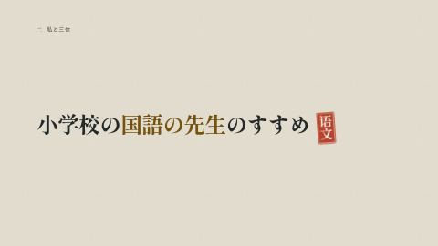
判子の「语文（ユーウェン）」は中国語で「国語」のこと。1998年生まれ。小学生のころ、国語の先生にすすめられて知った。「今日この本を選んだ理由は単純で、おもしろいからです」。一拍おいて、次の夜のスライドへ。
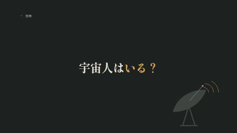
「ここから、森に入ります」。
問いかけて、少し待つ。
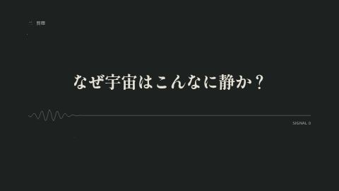
「ここから、森に入ります」。
「宇宙はこんなに広いのに、静かすぎる。"フェルミのパラドックス"と呼ばれています。『三体』はこれに答えを出しました」。
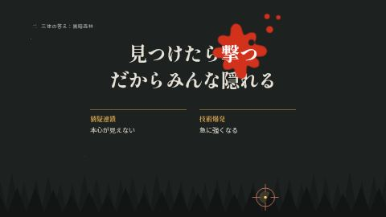
「ここから、森に入ります」。
森の中で、銃を持った狩人がみんな息をひそめているイメージ。理由は2つ。猜疑連鎖＝相手の本心が確かめられないので、疑いが止まらない。技術爆発＝相手がいつ急に強くなるかわからない。この2語は後でまた出てくる。
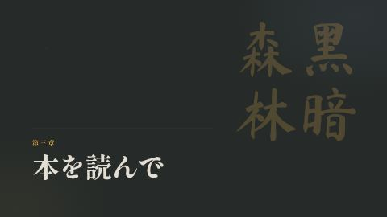
（この枚のノートは無い。画面の字を読むだけ）
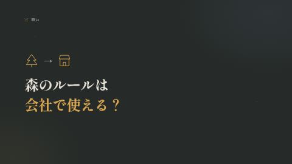
答えを言わずに間をとる。
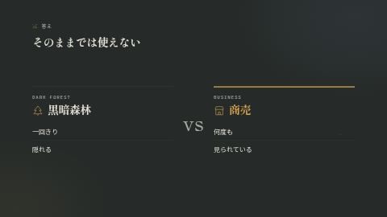
宇宙は一回きりで、隠れていれば生き残れる。商売は何度も続くし、評判は全部見られている。社長の顔を見て「これは、営業が一番よく知っていますよね」。
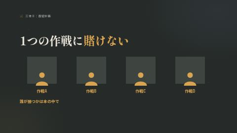
三体人は人類の会話も行動もすべて監視できるが、心の中だけは読めない。だから人類は、4人の「面壁者」に巨大な権限を与え、作戦を頭の中だけで立てさせた。誰にも説明しなくていい。誰が勝ったかは言わない。画面の「誰が勝つかは本の中で」を読むだけで止める。
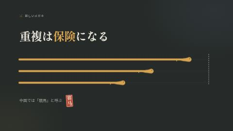
3本のレーンは「同じゴールに向かう複数のチーム」。判子の「赛马」が中国語の「競馬」。テンセント創業者の馬化騰も、2012年に「資源が許すなら、同じ製品を複数のチームが同時に開発してもいい。戦略上どうしても必要ならば」と書いている（講演者訳）。中国のIT業界ではこれを「賽馬（サイマー）」、つまり競馬と呼ぶ。
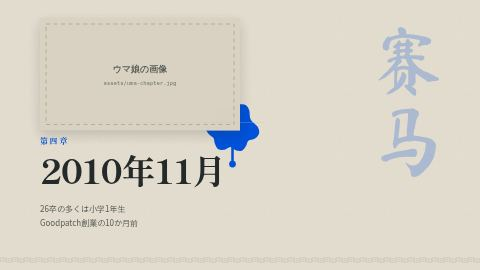
ここで画面が青になり、次から明るくなる（森を出て競馬場へ）。口では説明しなくていい。「26卒の多くは、小学1年生。Goodpatchは、まだ創業の10か月前です」。「私は、たぶん小学生でした」。「その前に、今日の主役を紹介させてください」。
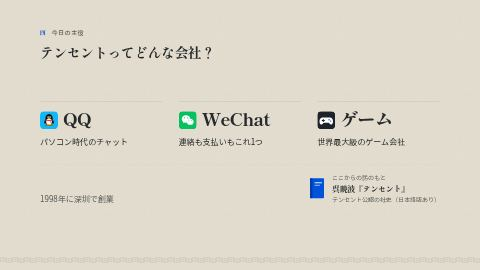
最初に本を紹介する。「ここからのテンセントの話は、呉暁波さんの『テンセント』という本がベースです。テンセントが公認した社史で、日本語版も出ています」。一言で済ませて、推しは『三体』のまま。1998年に深圳で創業（「私と同い年の会社です」）。QQはパソコン時代のチャットで、2010年の中国では"パソコンを持っていれば入っている"くらいのもの。WeChatは連絡も支払いもこれ1つ（日本でいうLINEとPayPayを足したもの）。ゲームは世界最大級で、『リーグ・オブ・レジェンド』のRiot Gamesを持ち、『エルデンリング』のフロム・ソフトウェアにも出資している。
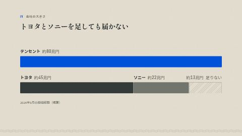
2026年9月の時価総額で、テンセントは約80兆円（香港ドルで約4兆、米ドルで約5000億）。トヨタは約45兆円、ソニーは約22兆円。「日本で時価総額トップを争うトヨタに、ソニーを足しても届きません」。数字は当日の朝にもう一度確認して、変わっていたら言い方だけ合わせる。
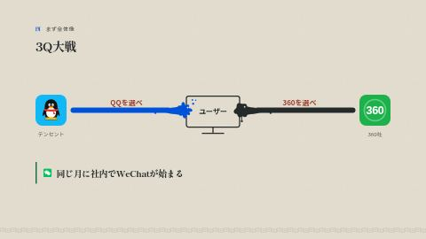
QQは当時の中国版LINE、360はセキュリティソフト最大手。9月から撃ち合いが続き、11月3日にQQが「QQか360か、どちらかを選べ」と迫った。そして同じ月に、社内ではWeChatが始まっていた。ケンカの答えとしてWeChatを作ったわけではない（ここは言い切らない）。
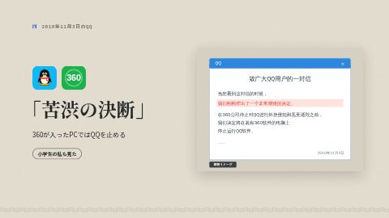
「2010年11月3日の夜、中国中のパソコンにこのお知らせが出ました。"苦渋の決断をしました。360が入ったPCでは、QQを止めます"。小学生だった私も、この画面を見ました」。この文面はネットでパロディが大流行し、「QQ体」と呼ばれた（日本の「〇〇構文」のようなもの）。画像は原文をもとにした再現。
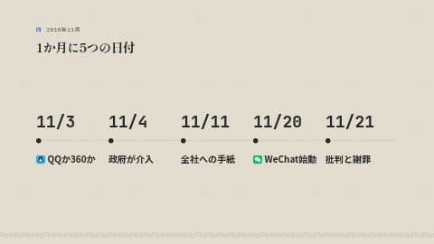
5つの日付を左から一度だけ読む。3Q大戦と微信の誕生は『テンセント』の後半の章（章番号は日本語版で確認）。
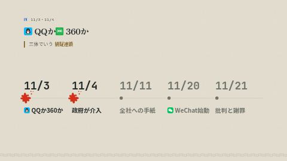
撃ち合いは9月から（360が先に「プライバシー保護」ソフト、10/29に「扣扣保鏢」）。翌日、政府が介入。「三体でいう、猜疑連鎖です」。
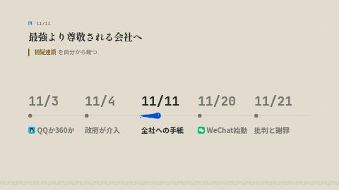
馬化騰から全社員への手紙。「最も強い会社」ではなく「最も尊敬される会社」へ。「猜疑連鎖を、自分から断ちにいった」（私の読み）。
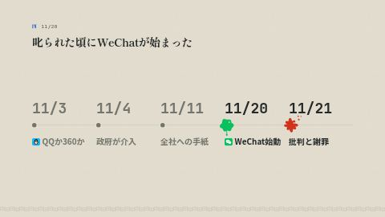
政府に叱られた頃、社内でWeChatが正式に始まった（2010年11月20日）。日付が近いのは偶然で、WeChatは張小龍（アレン・チャン）が海外のアプリ「Kik」を見て馬化騰に送ったメールから始まった。だからカレンダーでは「テンセントの答え」の青ではなく、「同じ月に社内で」の緑にしている。
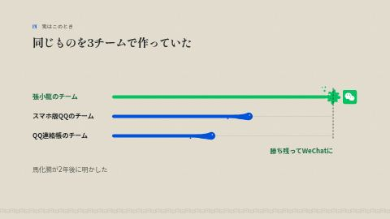
「実はこのとき、同じようなアプリを社内の3チームが作っていました」。張小龍の広州のチーム、スマホ版QQのチーム、QQ連絡帳のチーム。勝ち残ったのが張小龍のチームで、それがWeChatになった。馬化騰が2年後の講演で「微信の構想が出たとき、3つのチームが作っていた」と明かしている（講演者訳）。
聞かれたら：最初から"競馬"として設計したわけではなく、張小龍の提案を馬化騰が認め、スマホ版QQのチームにも声をかけ、それぞれが試した、という説明もある。外から見ると競馬に見えた、が正確。
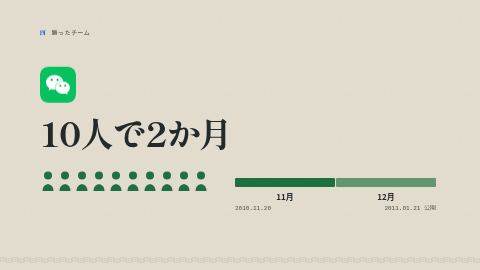
「勝ったチームは、約10人。2か月で最初の版を出しました」（「小部屋の11人」として知られる。2011年1月21日公開）。重複は、小さく短く走らせれば安い保険。
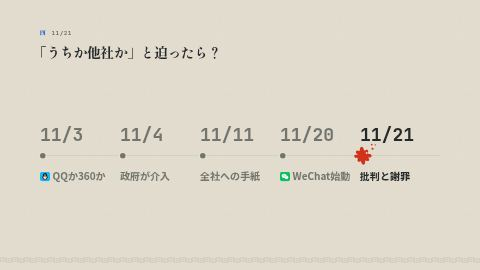
両社が謝罪。のちに裁判では勝つ（2013〜14年）が、世間の信頼はこの時もう失っていた。画面の問いを社長に向けて、答えを待つ。「お客さんは離れますよね。テンセントはそれを、数億人を相手に学びました」。
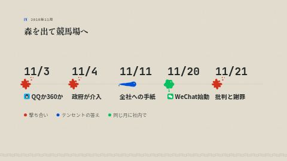
赤が撃ち合い、青がテンセントの答え、緑が同じ月に社内で起きたこと。図だけ見せて3秒黙る。同じ月に『三体Ⅲ』も中国で出版されていた。
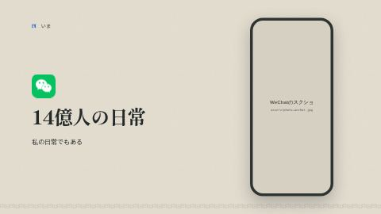
WeixinとWeChatの合計で月に約14億人。「連絡も、支払いも。私にとっても、なくてはならないものです」。スクショは個人情報をぼかす。
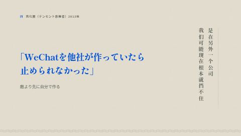
右の縦書きは本人の言葉（中国語）の一部「是在另外一个公司／我们可能现在根本就挡不住」（他社で作られていたら、今ごろ止められなかった）。このスライドの役目は「社内で競わせたのは正しかったのか？」への、本人の答え。
話す順番：「WeChatは、QQのお客さんを奪っていきました。自分の会社の中で、自分の看板商品と競争したわけです。それでも2013年、馬化騰はこう言っています。"もしWeChatを他社が作っていたら、止められなかった"」（講演者訳）。
一言添える：「どうせ誰かに食われるなら、自分で食う」。iPodを自分で食ったiPhoneと同じ構造。
画面の下の一行「敵より先に自分で作る」を読んで、次の「営業のタブー」へ。
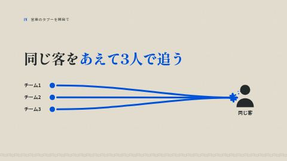
「同じ客を何人もで追う」は営業では揉める原因。それを開発ではあえて3チームでやった。
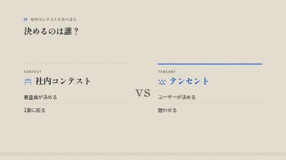
よくある社内コンテスト（例：リクルートのRing）は審査員や役員が1案に絞る。テンセントは競わせて、ユーザーに決めさせた。良し悪しは言わない。「日本企業は」とひとくくりにしない。
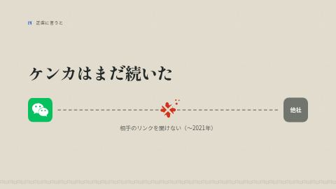
「テンセントが外で撃つのを完全にやめたわけではありません」。その後もライバルへのリンクを互いにブロックしていた。2021年9月、政府の指導で各社がようやく解除。だから今日の一言は「外で撃たず」ではなく「外で撃つより」。
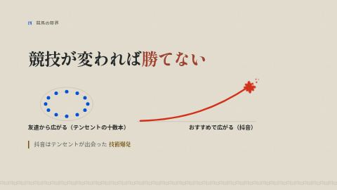
ショート動画アプリを十数本出したと報じられるが、どれも「友達経由で広がる」同じタイプ。「おすすめで広がる」抖音（TikTokの中国版、テンセントではなくByteDanceのアプリ）には勝てなかった。テンセントから見れば、三体でいう技術爆発。
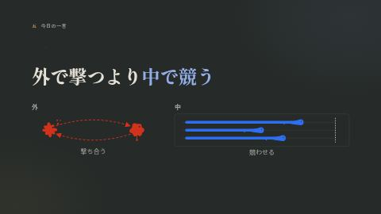
画面がまた暗い森に戻る。冒頭の結論をもう一度。「外で撃つより、中で競う」。AIで作るのが速く安くなった今、重複は前より試しやすい、と一言添えてもいい。
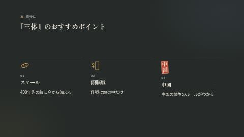
3つを1文ずつ。誰に向けてとは言わない。
スケール：「三体人の艦隊が地球に着くのは400年以上先。それでも人類は、今から準備を始めます。400年先を見て今どう動くか、という話です」。
頭脳戦：「さっきの面壁計画です。作戦は頭の中だけ。4人がそれぞれ何を考えていたのか」。
中国：「最初に"三体は中国のキングダム"と言いました。中国の経営者やエンジニアがどういうルールで競争を見ているか、この本を読むとわかります。テンセントの話も、その延長です」。
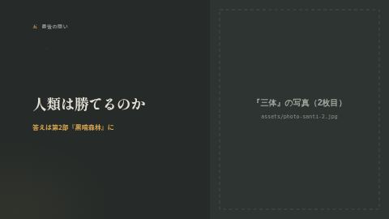
本を手に持って。「敵の艦隊は、もう地球に向かっています。着くのは400年以上先。人類は勝てるのか。答えは第2部『黒暗森林』にあります」とだけ言う。面壁者という言葉は使わない。
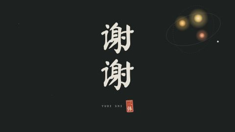
画面は縦書きの「谢谢（シエシエ）」だけ。口で「ありがとうございました」と言って、お辞儀。余裕があれば「宇宙人に会ったら、撃つ前に、まず話しかけてみます」と口で添える。
使い方｜ストップウォッチを持って通しで一度話す。枚が変わるたびに右端へ通過時刻を書く。Part の合計を outline.md の配分（2／11／4／15／3分）と見比べ、どの Part で伸びたかを見る。
話の中身はこのシートの右側が原稿代わり。台本にはしない。
作り直し｜node tools/shoot-thumbs.js（縮小画）→ python3 tools/build-rehearsal.py（このファイル）。ノートを書き足したら作り直す。